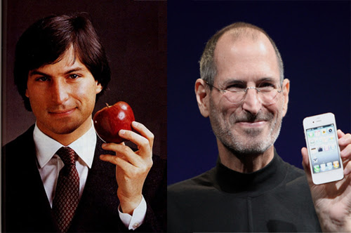
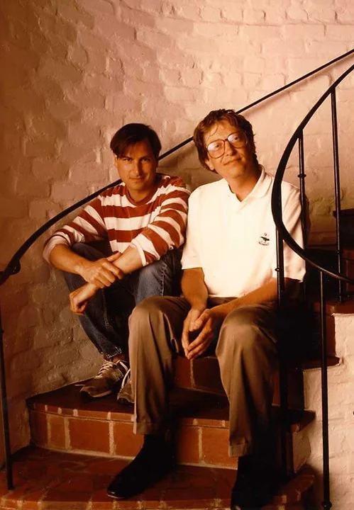
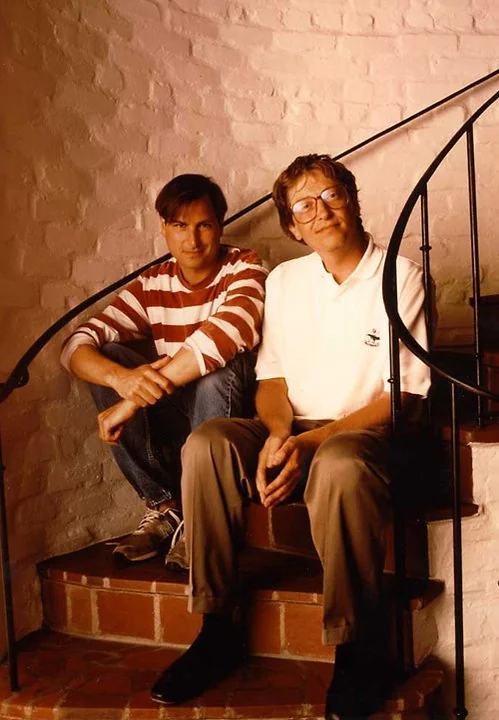

Biography
Early Life :
Steve Jobs was born on February 24, 1955, in San Francisco, California, to Joanne Schieble and Abdulfattah Jandali, two university students who put him up for adoption. He was adopted by Paul and Clara Jobs, a loving couple who encouraged his early interest in electronics and gadgets. Jobs grew up in Mountain View, a city located in Silicon Valley, which later became the hub of technological innovation.
Education and Early Career :
Steve attended Homestead High School in Cupertino, California, where he met Steve Wozniak, a like-minded electronics enthusiast. Jobs briefly attended Reed College in Portland, Oregon, but dropped out after one semester. However, he continued to audit classes, including a calligraphy course that later influenced the typography choices for Apple computers.
In 1974, Jobs returned to California and began attending meetings of the Homebrew Computer Club with Wozniak. Together, they created the first Apple computer in Jobs' garage, leading to the founding of Apple Computer, Inc. on April 1, 1976.
Founding and Success of Apple :
Apple's first product, the Apple I, was a simple circuit board, but it was the Apple II, introduced in 1977, that became a mass-market product and revolutionized the computer industry. The graphical user interface and the introduction of the Macintosh in 1984 further cemented Apple's place as a leader in personal computing. Jobs' insistence on design and user experience became the company's hallmark.
NeXT and Pixar :
In 1985, after a power struggle within Apple, Jobs left the company he co-founded. He started NeXT Inc., a computer platform development company focusing on the higher-education and business markets. Although NeXT computers were not commercially successful, they were technologically advanced and later became the foundation for macOS after Apple acquired NeXT in 1996.
During this period, Jobs also acquired The Graphics Group, later known as Pixar, from Lucasfilm in 1986. Under Jobs' leadership, Pixar produced the first-ever computer-animated feature film, "Toy Story," in 1995. Pixar's success made Jobs a billionaire when it was acquired by Disney in 2006.
Return to Apple and Later Innovations :
Jobs returned to Apple in 1997 as interim CEO and was pivotal in revitalizing the company. He oversaw the development of groundbreaking products like the iMac, iPod, iPhone, and iPad, which transformed Apple into one of the world's most valuable companies. His focus on sleek design, intuitive user interfaces, and innovative features set new standards for the tech industry.
Personal Life :
Steve Jobs married Laurene Powell in 1991, and they had three children together: Reed, Erin, and Eve. He also had a daughter, Lisa Brennan-Jobs, from a previous relationship. Jobs was known for his private nature but spoke openly about his battle with pancreatic cancer, which was diagnosed in 2003. Despite his health struggles, he remained deeply involved in Apple's operations until shortly before his death.
Legacy :
Steve Jobs passed away on October 5, 2011, leaving behind a legacy of innovation that continues to shape the technology industry. He was a visionary who saw the potential of technology to change the world and relentlessly pursued his vision. Jobs' contributions to personal computing, digital animation, music, mobile phones, and digital publishing are immeasurable, and his influence is felt in many aspects of modern life.
Steve Jobs' life and work continue to inspire countless individuals to think differently, push boundaries, and strive for excellence in all they do. His story is a testament to the power of vision, creativity, and perseverance.
photo-gallery
 



Some inspirational and motivational quotes by Steve Jobs
- Remembering that you are going to die is the best way I know to avoid the trap of thinking you have something to lose. You are already naked. There is no reason not to follow your heart.
- My favourite things in life don't cost any money. It's really clear that the most precious resource we all have is time.
- For the past 33 years, I have looked in the mirror every morning and asked myself: 'If today were the last day of my life, would I want to do what I am about to do today?' And whenever the answer has been 'No' for too many days in a row, I know I need to change something.
- That's been one of my mantras - focus and simplicity. Simple can be harder than complex: You have to work hard to get your thinking clean to make it simple. But it's worth it in the end because once you get there, you can move mountains.
- Being the richest man in the cemetery doesn't matter to me. Going to bed at night saying we've done something wonderful, that's what matters to me.
- Creativity is just connecting things. When you ask creative people how they did something, they feel a little guilty because they didn't really do it, they just saw something. It seemed obvious to them after a while. That's because they were able to connect experiences they've had and synthesize new things.
- A lot of people in our industry haven't had very diverse experiences. So they don't have enough dots to connect, and they end up with very linear solutions without a broad perspective on the problem. The broader one's understanding of the human experience, the better design we will have.
Honors and awards
1985 : spanawarded National Medal of Technology (with Steve Wozniak) by US President Ronald Reagan, the country's highest honor for technological achievements1987 : Jefferson Award for Public Service1989 : Entrepreneur of the Decade by Inc.1991 : Howard Vollum Award from Reed College2004–2010 : listed among the Time 100 Most Influential People in the World on five separate occasions2007 : named the most powerful person in business by Fortune magazine2007 : inducted into the California Hall of Fame, located at The California Museum for History, Women and the Arts2012 : Grammy Trustees Award, an award for those who have influenced the music industry in areas unrelated to performance2012 : posthumously honored with an Edison Achievement Award for his commitment to innovation throughout his career2013 : posthumously inducted as a Disney Legend2017 : Steve Jobs Theater opens at Apple Park2022 : posthumously awarded the Presidential Medal of Freedom by US President Joe Biden, the country's highest civilian honor
Guest book
Some thoughts of Steve job admirers :
- Steve, your innovative spirit and visionary leadership transformed the world. Your legacy will continue to inspire and guide us for generations to come. Rest in peace.
- Thank you, Steve, for teaching us to 'think different.' Your passion and creativity have left an indelible mark on our hearts and minds.
- In loving memory of a true pioneer. Your relentless pursuit of excellence and innovation changed the world forever. You will always be remembered, Steve.
- Steve Jobs, a legend who saw the world not as it was, but as it could be. Your legacy lives on in every innovation and every dream you inspired.
- Your journey was one of passion, innovation, and inspiration. Thank you, Steve, for showing us that the impossible is possible.
- Steve, your genius and vision have profoundly impacted our lives. We honor your memory and the extraordinary legacy you left behind.
- Remembering Steve Jobs, whose creativity and determination reshaped our world. Your spirit lives on in the technology that surrounds us.